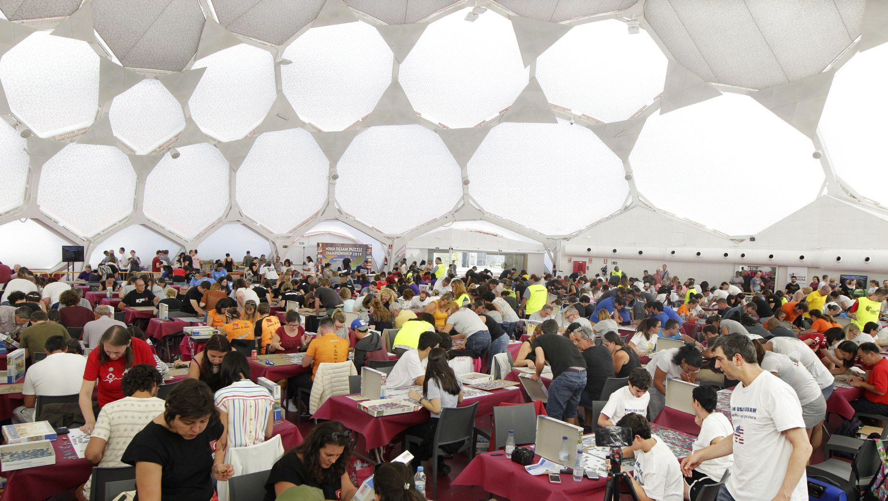

We started doing puzzles as a family when I was a child. At first, we were doing small-sized puzzles, but later, after we realized how relaxing and enjoyable an activity it was, we started making more professional puzzles. We spent a lot of time doing puzzles during Covid times and completed 3 puzzles with over 1000 pieces in a short time. After that, we didn't do puzzles for a long time. I would like to share the name of the puzzles we made, the number of pieces and how long it took us to complete them with you. If you decide to do this puzzle, you can compare your own time with ours.
Puzzle Name
Number Of Pieces
Completing Time
One Dot at a Time
1500
18 hours 16 minutes
Beautiful Bay in Thailand
1500
16 hours 47 minutes
Sunnyside Antiques
1000
15 hours 36 minutes
Yesterday, while browsing YouTube, I came across a video and it was about the World Jigsaw Puzzle Championship. I never thought there would be a tournament on puzzle and I spent almost the whole day watching the World Jigsaw Puzzle Championship. I would like to share some of the things I learned from these videos with you.

First of all, competitions are divided into 3 categories: individuals, pairs and teams. In Individual competitions, a qualifyin and a final round are played. In both rounds, the contestants are given a 500-piece puzzle and one and a half hours of time. At the end of this period, the 2 most successful contestants from each different country participating in the competition and then the 30 contestants who completed the puzzle with the fastest time advance to the finals. In the final, the contestant who completes the 500-piece puzzle the fastest becomes the champion. The same system also applies to pairs category. What is different about team competitions is that a team of 4 people is given 4 puzzles and asked to choose 2 of them. This is where teams need to develop tactics and decide which 2 puzzles they can finish more quickly and easily. When the start is given, everyone in the team must first work on one puzzle and when they finish that puzzle, they must move on to the next one. The team that completes 2 puzzles in the shortest time becomes the champion.
After I came across these videos, I started to get excited about doing puzzles again. If you have any puzzles that you enjoy doing, please do not forget to share them with me.
Even though I don't actually listen to much techno or house music, the DJ I discovered recently made me fall in love with his music. Fred Again has greatly influenced not only me but also the entire music world. On the sites I visited to check ticket prices, I saw that there was not a single concert that was not sold out. So, who is this Fred Again?
Frederick John Philip Gibson born on July 19, 1993 in London, England. Since there are dozens of websites where you can find more detailed career and family information, I would like to tell you why his music is amazing.
The first song I listened to from Fred Again was Sabrina (i am a party). When I first listened to it, the song made me dance lightly and touched my soul. The reason for this was that a woman's speech was adapted into the song with certain tricks. When I researched it later, I realized that the lyrics of the song were actually taken from a speech where Sabrina Benaim talked about the first time she shared her depression with her mother. That's why the song was called Sabrina (i am a party). Fred Again uses this kind of naming in almost every piece. Beforehand, he determines the real name of the song in one word and generally uses woman names such as Clara, Angie, Daniella, Delilah. He continues by adding one of the most striking lyrics of the song, so that the listeners will not have difficulty searching for the song.
I've never liked very music that are too complex or basic in terms its melody and beat. Fred Again also impressed me a lot with his melodies that touched the human soul and the speech segments he found from different places and integrated into his music. I recommend everyone to listen to Sabrina, Clara and Lights Out.